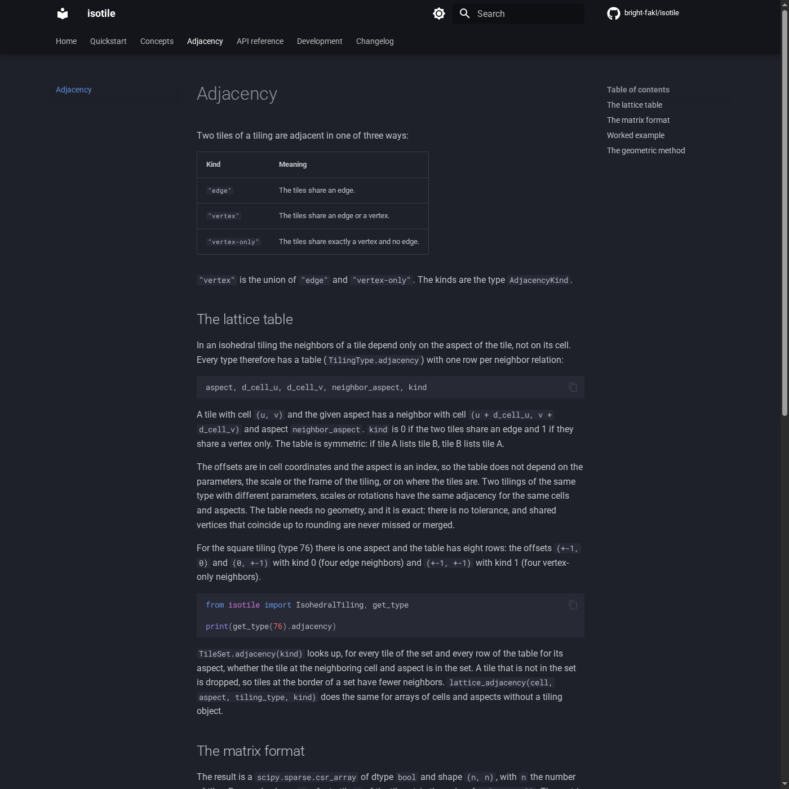
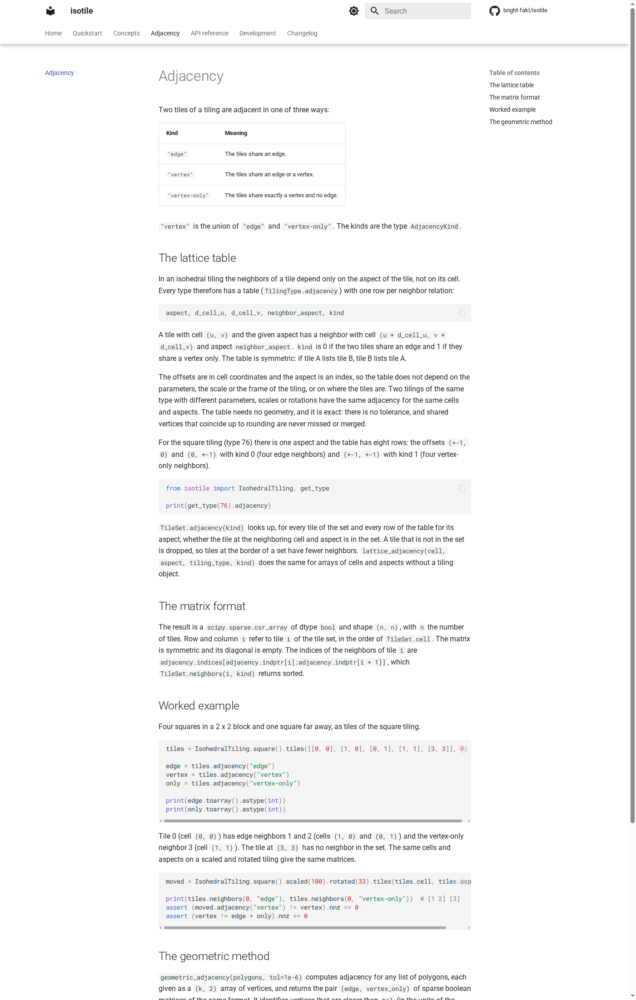
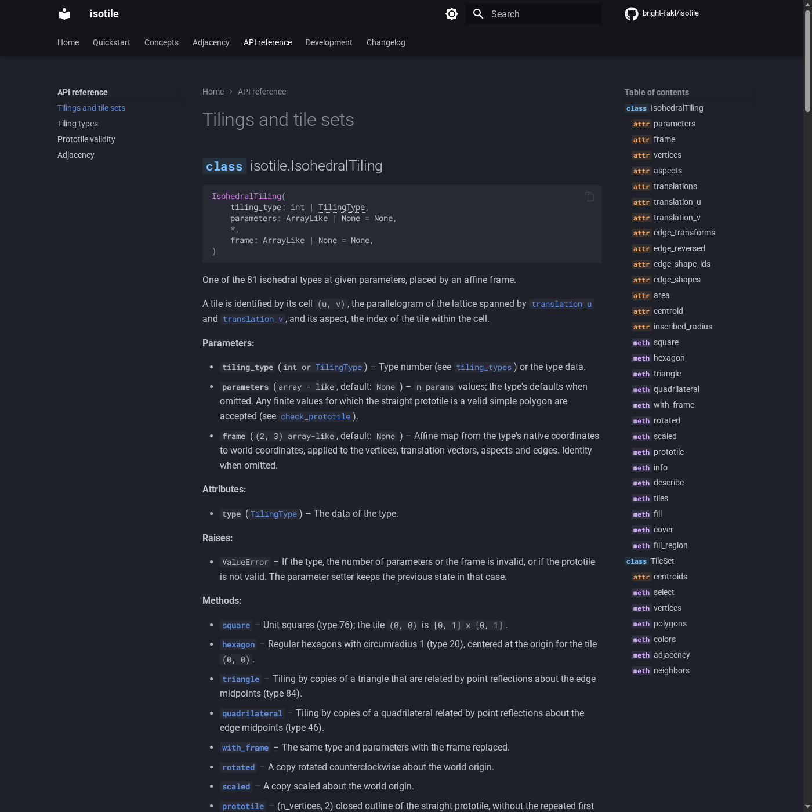
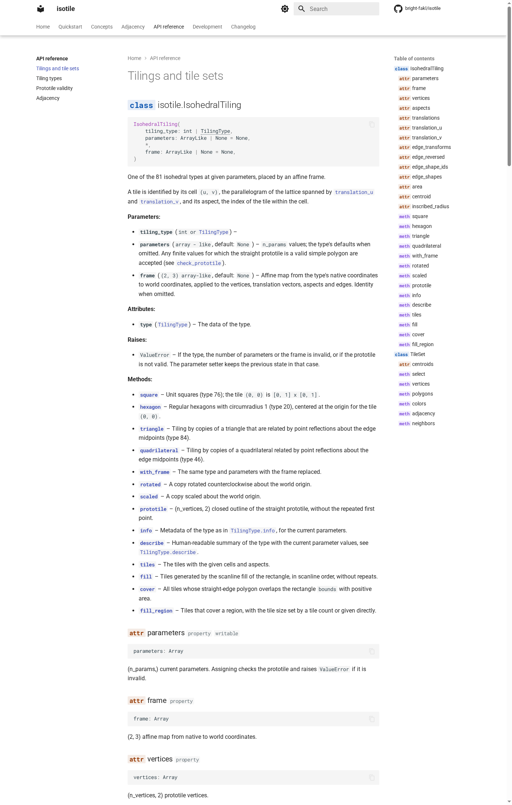
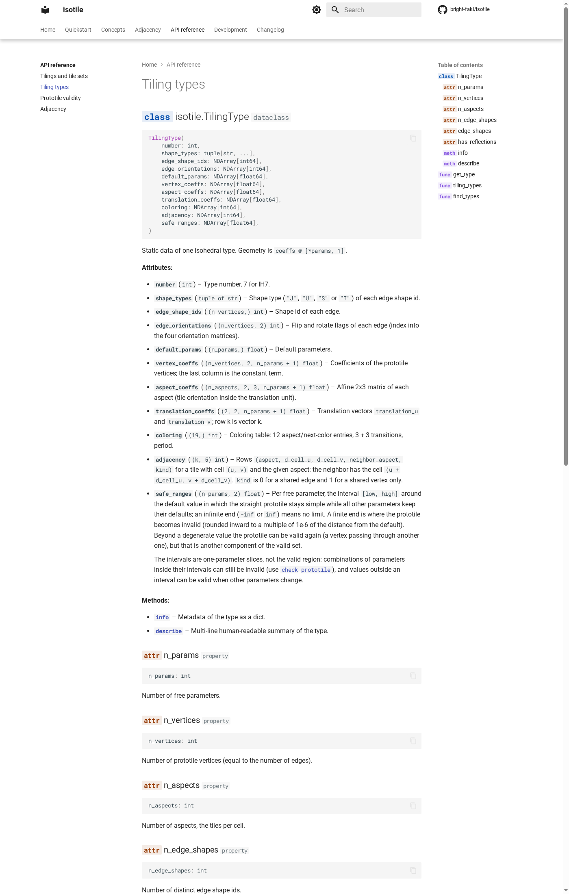
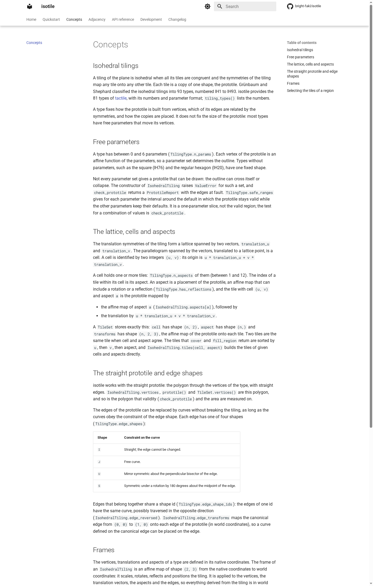
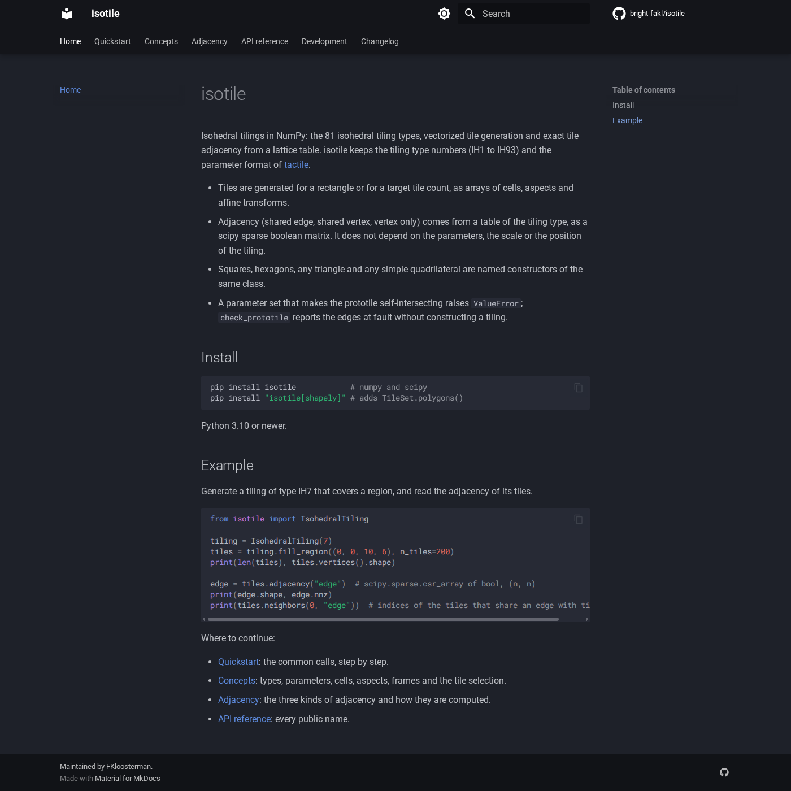
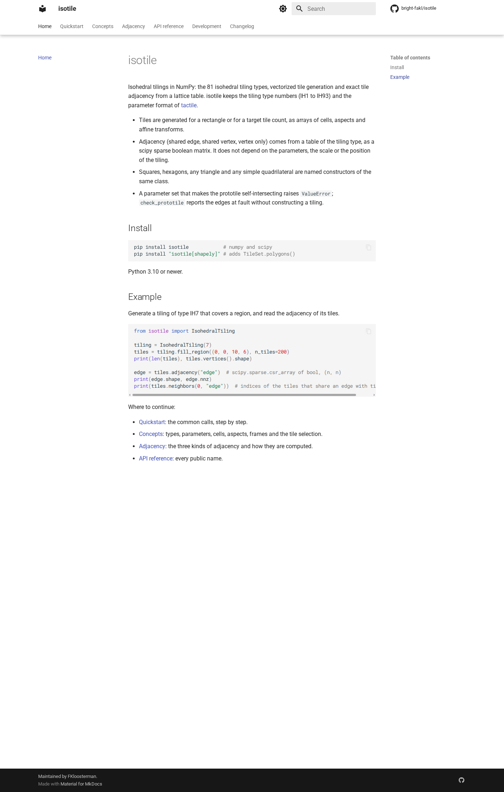
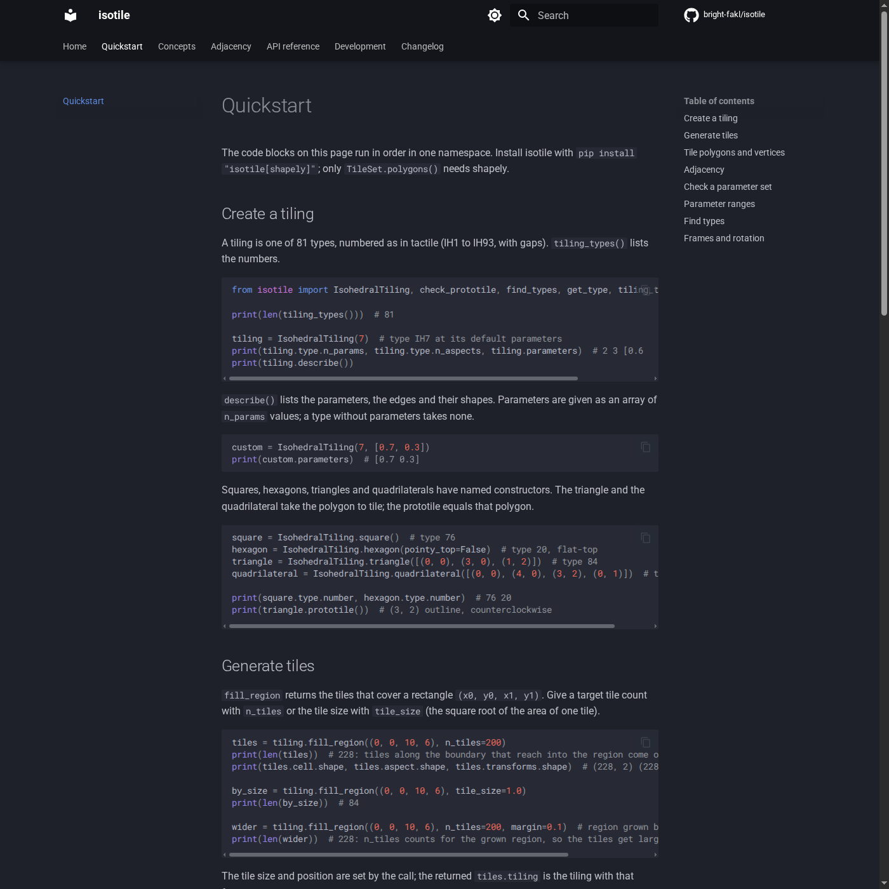
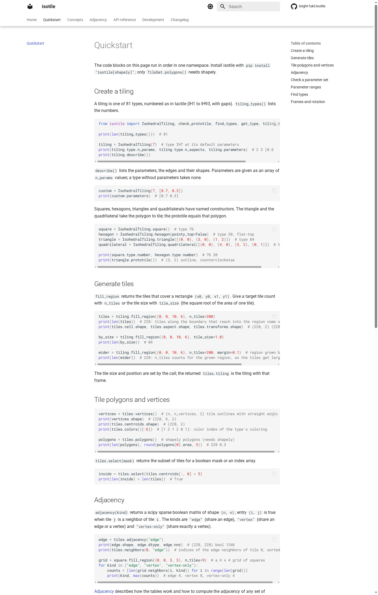

Adds the mkdocs-material documentation site (home, quickstart, concepts, adjacency, API reference from docstrings, development, changelog), tests that run the page code and check that the API reference lists every public name, a strict docs build job in CI and a Pages deployment workflow for main.
docs (mkdocs<2, mkdocs-material, mkdocstrings[python], pymdown-extensions>=10.12,<12); uv.lock updated; default uv sync unchanged. The pins are commented in pyproject.toml: mkdocstrings 1.0.x crashed with pymdown-extensions 12.3 (Highlight.__init__ missing md), and Material warns about MkDocs 2.0.mkdocs.yml: material theme with carto-flow's light and dark palettes and navigation features, code copy, search, permalinks, strict; logo and favicon unset (Material shows its default book icon until the logo PR).index, quickstart, concepts, adjacency, development, changelog (pymdownx.snippets include of CHANGELOG.md, which also works on Windows), and the API reference api/index, api/tiling, api/types, api/prototile, api/adjacency.tests/test_docs_examples.py: runs the python blocks of index, quickstart, concepts, adjacency and development (shared namespace per page, temporary directory, Agg backend if matplotlib is mentioned); fails if any other docs page has a python block; checks that the ::: isotile.X entries in docs/api/*.md equal isotile.__all__ exactly and that all __all__ names import. Skips when docs/ is absent (sdist).check-docs job in main.yml (--group docs --no-group tactile); deploy-docs.yml with a build job on push, pull request (paths limited) and dispatch, and a deploy job only on push to main and dispatch (pages permissions, concurrency group pages, github-pages environment, upload-pages-artifact@v3, deploy-pages@v4).| Check | Result |
|---|---|
mkdocs build -s | no warnings; an unresolvable ::: isotile.Nope fails the build (verified) |
| pytest | 2,843 passed, 78 skipped |
ruff, ruff format, mypy --strict, uv lock --check, _build_data --check | clean |
| CI at ffef968 | all jobs green (lint, typecheck, tests on Linux 3.10 to 3.13, macOS 3.12, Windows 3.12, tactile-equivalence, data-check, minimum-versions, wheel-smoke-test, check-docs, deploy-docs build); the deploy job is skipped on the PR by design |
| Visual | light and dark checked for six pages; tables, code with copy buttons, API signatures, table of contents and class and method summaries render; long code comments scroll horizontally inside code blocks |
| Claims in the docs | checked by running the code (tile counts, neighbor counts, safe_ranges of type 7, find_types, table symmetry for all 81 types, lattice against geometric adjacency, tile order of cover) |
github-pages environment only allows main, so the live site at https://bright-fakl.github.io/isotile/ can only be checked after the merge.Logo and favicon (next PR); whether the static badge becomes the Pages deployment badge once the site is live.

Adjacency page, dark palette.

Adjacency page, light palette.

API reference of the tiling module, dark palette.

API reference of the tiling module, light palette.

API reference of the types module, light palette.

Concepts page, light palette.

Home page, dark palette.

Home page, light palette.

Quickstart page, dark palette.

Quickstart page, light palette.